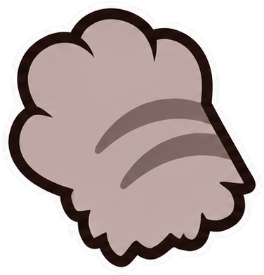
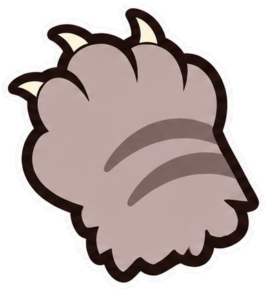
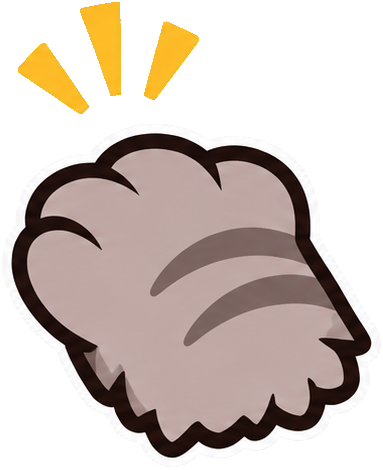
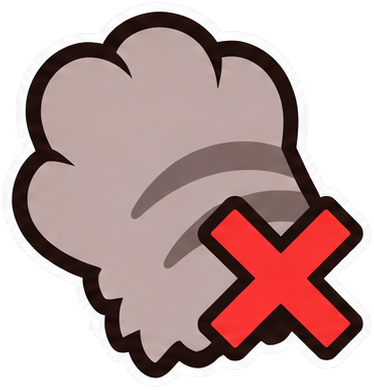

La demande. Remplacer le curseur de la souris par les pattes de chat que Wouh a dessinées (fil T9, 15/11), et en vue assise remplacer le carré blanc du centre par la patte.

patte
griffes
appuyée
croixRéférence. Les jeux à curseur dessiné changent d'image selon ce qu'il y a dessous : Diablo et Hades (main ou épée qui s'allume sur un ennemi), Inscryption (main qui se ferme en prenant une carte), Stardew Valley (gant, puis main ouverte sur ce qui se ramasse, rouge sur ce qui est refusé). En vue à la première personne (Inscryption, Phasmophobia), le point du centre change de forme seulement sur ce qui se prend.
Aujourd'hui. Souris libre (menus, salon, tablette, vue de nuit) : la flèche de Windows. Vue assise : la souris est verrouillée, un carré blanc de 12 px au centre, qui grossit et jaunit sur une carte ou un bouton.
La scène. Nuit, 8 joueurs, le Mage occulte cherche qui viser avec la souris ; le lendemain, au vote, il tourne la tête vers une carte en vue assise.
Sans question. Le bout de l'orteil en haut à gauche est le point qui clique, comme la pointe d'une flèche. La patte vaut partout où la souris est libre, menus compris. Les images de Wouh, détourées, restent provisoires : il pourra les remplacer sans toucher au code.
Passe la souris (ou le doigt) sur les écrans : la patte suit et réagit pour de vrai.
La flèche de Windows.
La patte au repos partout, elle ne change jamais. Ce qui se clique se montre seul (contour jaune), comme aujourd'hui.
La patte au repos ; au clic, la patte appuyée avec ses traits jaunes, un court instant.
Griffes sorties sur ce qui se clique, appuyée au clic, croix sur ce qui ne se clique pas maintenant (pouvoir épuisé, sa propre carte quand le pouvoir ne la vise pas).
Les griffes sortent seulement sur une carte qu'un pouvoir peut viser ; sur un bouton ou un menu, la patte reste au repos. Appuyée au clic, croix sur le refusé.
Carré blanc, plus gros et jaune sur une carte ou un bouton.
Le carré devient la patte, toujours là. Sur ce qui se prend, elle sort les griffes ; au clic, elle appuie.
Au repos un petit point rond qui ne cache rien ; la patte griffes sorties apparaît seulement sur ce qui se prend.
L'écran est vide quand on regarde les chats ; la patte n'apparaît que sur ce qui se prend.
Pour la souris comme pour la vue assise. Tailles sur un écran 1080p.
La taille d'une flèche de Windows.
On voit la patte sans qu'elle cache le nom d'une carte.
On lit bien les griffes et la croix, elle couvre un bout de carte.